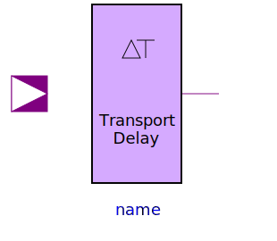

The Delay package collects the delay blocks which are used in many components. Both transport and inertial delay are offered for scalar connectors. The most advanced component is the sensitive inertial delay the delay time of which is chosen in dependency of the signal values. This component is also available for vector valued input.
| Name | Description |
|---|---|
| Definition of delay parameters | |
|  TransportDelay | Transport delay with initial parameter |
| Inertial delay with initial parameter | |
| Provide the input as output if it holds its value for a specific amount of time | |
|
|
Delay of a vector of digital signals |